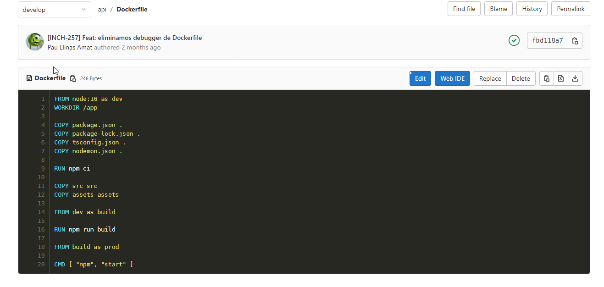
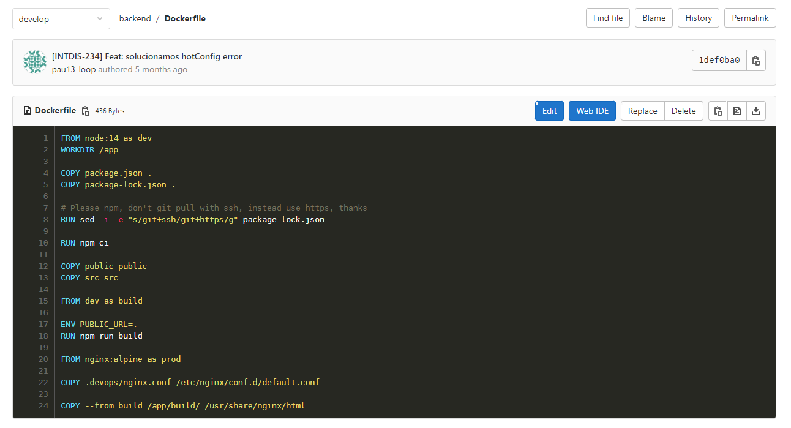
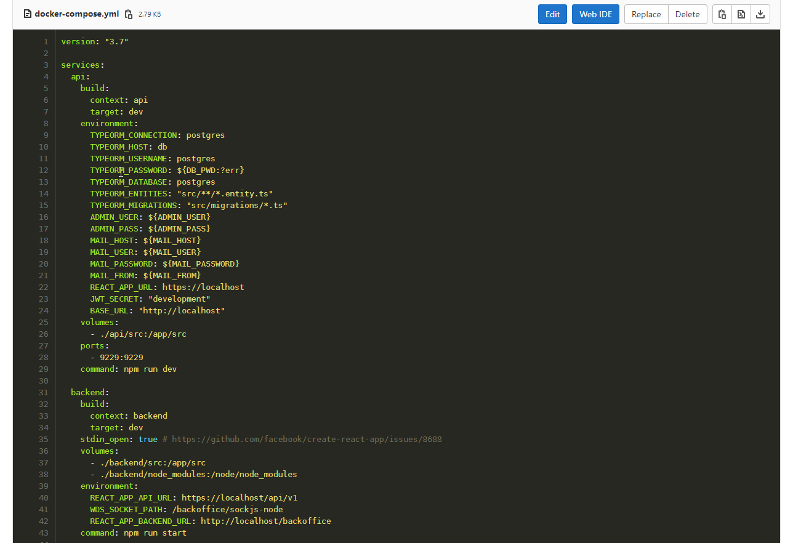
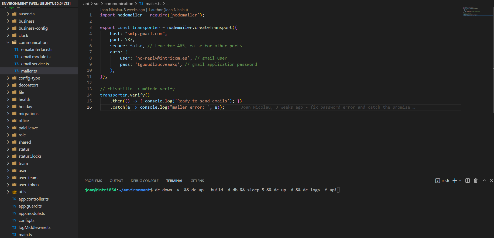

## Sistemas Informáticos ### en Intricom ----- ## Dockerizando Control Presencia... <div style="display: flex; flex-direction: row; gap: 10px;"> <img src="https://brunocapuano.files.wordpress.com/2016/06/swarmnado.gif"> <img src="https://www.intricom.es/wp-content/uploads/2022/04/GestionP2022_2-370x240.jpg" alt="cp" width="800px" height="400px"> </div> --- #### Control presencia hub, acceso a todos los componentes del proyecto <img alt="aqui va el hub"> --- dockerfile api  --- dockerfile backend  --- dockerfile frontend <img src="./images/2_cp_dockerfile3.png" alt="dfront"> --- compose.1  --- compose.2 <img src="./images/3_compose2.png" alt="cp2"> --- compose.3 <img src="./images/3_compose3.png" alt="cp3"> --- ### caddy -> proxy inverso <img src="https://miro.medium.com/max/570/1*P85cbSDS8m3vqGv5giBhXQ.png" alt="caddy"> --- pg_admin <img src="" alt="pg admin"> --- Hoppscotch <img src="" alt="Hoppscotch"> --- makefiles: <p style="font-size: 20px;">If you want to run or update a task when certain files are updated, the make utility can come in handy. The make utility requires a file, Makefile (or makefile), which defines set of tasks to be executed. You may have used make to compile a program from source code. Most open source projects use make to compile a final executable binary, which can then be installed using make install.</p> <img src="./images/5_makefile.png" alt="make"> --- nodemailer: configurar y desarrollar <img src="https://strapengine.com/wp-content/uploads/2021/09/contact-form-with-nodemailer-in-nodejs.jpg" alt="nodemailer"> ---  ----- Stack microsoft, iis server, visual studio, sql server ----- # Monitoring ----- # Branching ----- ## made with #### [reveal.js](https://github.com/hakimel/reveal.js) #### [excalidraw](https://github.com/excalidraw/excalidraw)